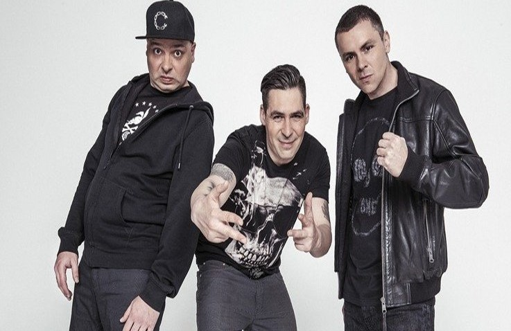
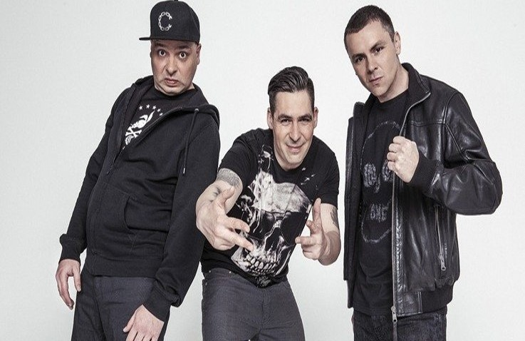

Какво представлява рапът?
Рап музиката, или хип-хоп, е създадена през 1980-те години. Стилът е комбинация на реч, проза, поезия и песен. Произходът му може да се търси в африканската, карибската и американската музика. Въпреки че рапът се е превърнал в международо явление, някои тенденции в него, засягащи раса, социална прослойка и пол, остават в средите на рапърите и техните почитатели. Първите години на 1990-те бележат застой в развитието на рап музиката в България. Едва към края на 1990-те години се появяват първите успешни рап изпълнители – „Ъпсурт“. Това съвпада с окончателното омизерявеане на населението. Известни съвременни български изпълнители са Спенс, F.O., Бобо , Dim4ou,100 kila, Секта, Wosh MC и други.
| Известни съвременни български рап изпълнители | ||
|---|---|---|
| |
|
 |
| „Ъпсурт“ | Ицо Хазарта | Бобо |
Този стил музика първоначално е използван като танцов ритъм в клубовете на Бронкс (Ню Йорк) и Детройт. Постепенно се формират много групи и възниква напрежение между тях, което е причина и за много насилие и смърт. Преди рапът се е делял на 2 основни школи: West Coast и East Coast. Сред основателите на стила се нареждат групите: R.U.N. DMC, Whodini, Beastie Boys, Grand Master Flash. Сред най-известните изпълнители през годините се нареждат Snoop Dog, The Notorious B.I.G., Тупак, д-р Дре, Еминем, MC Hammer, Нейт дог, Бъста Раймс, B.G. The Prince Of Rap, Cypress Hill, Айс Кюб, 50 Cent, Ийзи-Е, Lil Wayne, TYGA, DMX и много други.
| Известни чуждестранни рап изпълнители | ||
|---|---|---|
| |
|
|
| 50-Cent | Eminem | Tyga |
Рапът на днешния хип-хоп се създава, като се използват сложен ритъм, интригуваща поетична форма и изобретателна игра с думи. Едновременно с използването на елементи, характерни за традиционната поезия, рап лириката засяга и живота на улицата, където се е зародил и хип-хопът.